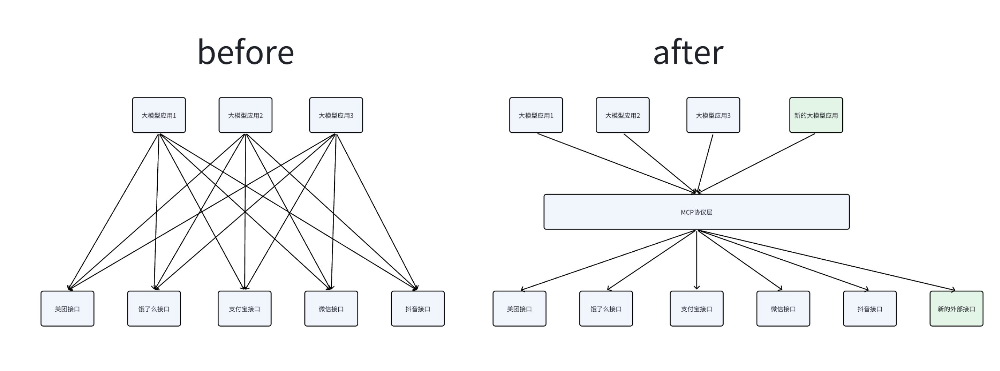
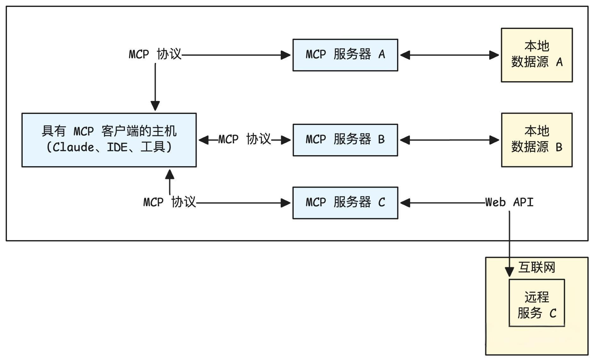
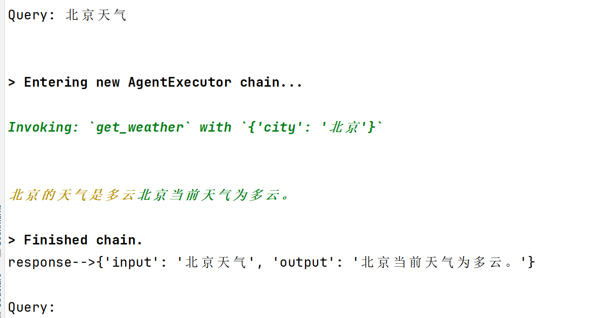
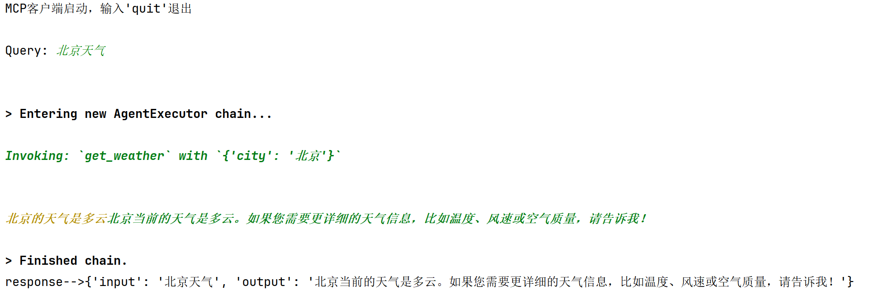
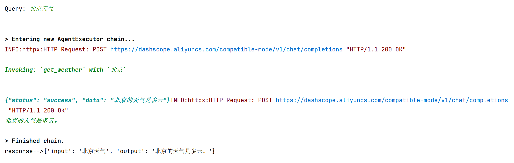

🔌 MCP：模型与外部工具的标准接口
工程实践提示：示例中的模型地址、数据库账号和密钥均应通过环境变量或独立配置文件注入；部署前还需补充权限控制、输入校验、超时重试、日志脱敏、来源引用与离线评估。
协议版本提示：MCP 的官方发布时间为 2024 年 11 月 25 日。当前远程连接应优先使用 Streamable HTTP，早期独立 SSE transport 仅作为兼容方式。详见 Anthropic 发布说明与 MCP 传输规范。
学习目标
- 理解协议在AI中的作用。
- 掌握MCP的核心概念及应用。
- 熟悉mcp的基本使用。
1 背景
在前面的所有工具调用例子中，工具描述都是由大模型应用的开发者来负责的。这里引入两个问题：
-
每个人都由自己对工具的理解，每个人的描述方式不一致，怎样保证工具调用的质量是稳定的？
-
每次开发新应用，都要重新写一遍工具描述，引入了太多重复的工作。

核心原因在于：对工具的描述是一个繁琐而复杂的过程，这项工作只有工具的开发者能够清晰准确地完成，而不应该由工具调用者负责。如果工具能清晰地描述自己的功能，就能够实现“一次编写，到处调用”，上述问题就迎刃而解了。
2 什么是MCP协议
MCP（Model Context Protocol，模型上下文协议）是由 Anthropic 在 2024 年 11 月 25 日正式发布的一套开放协议，旨在实现大型语言模型（LLM）与外部数据源和工具的无缝集成，用来在大模型和数据源之间建立安全双向的链接。
Anthropic的愿景，希望把MCP协议打造成AI世界的“Type-C”接口，可以通过MCP协议工具、数据链接起来，达类似HTTP协议的那种通用程度。
协议（Protocol）是一种约定或标准，用于定义不同系统、设备或软件之间如何通信和交换数据。它确保各方使用相同的“语言”和规则，避免混乱。例如，HTTP协议定义了浏览器与服务器的交互方式，USB协议标准化了设备连接。
2.1 MCP 核心架构
MCP协议有两个核心角色：客户端与服务端。
MCP服务端 (Tool Provider)：
- 角色：工具的提供者。
- 职责：将一个或多个本地函数（例如，Python函数）包装起来，通过一个标准的MCP接口暴露出去。它监听来自客户端的请求，执行对应的函数，并返回结果。
- 例子：一个天气查询服务、一个数学计算服务、一个数据库访问服务。
MCP客户端 (Tool Consumer)：
- 角色：工具的调用者或消费者。
- 职责：连接到MCP服务端，查询可用的工具列表（自发现），并根据需要调用这些工具。
- 例子：大模型Agent、自动化脚本、任何需要远程执行功能的应用程序。

MCP 主机（MCP Hosts）指的是发起请求的 LLM 应用程序。MCP 客户端（MCP Clients）指的是在主机程序内部的一个对象。
2.2 MCP 工具调用流程
步骤 1：客户端注册并连接 MCP Server
-
MCP Client 启动后，根据配置文件或命令参数连接多个 MCP Server。
-
每个 Server 都会返回一份工具描述列表（Tool Manifest），包括：
JSON[ { "name": "query_mysql", "description": "执行 SQL 查询", "input_schema": {...}, "output_schema": {...} } ]
-
Client 将这些工具的元信息缓存并上报给 LLM，使大模型“知道”有哪些可用工具。
步骤 2：LLM 接收用户输入并决定调用工具
-
用户输入请求（如：“帮我查一下 users 表中有多少行数据”）。
-
LLM 分析语义后，判断需要使用
query_mysql工具。 -
LLM 生成 function calling 格式的调用指令：
JSON{ "name": "query_mysql", "arguments": { "sql": "SELECT COUNT(*) FROM users;" } }
步骤 3：MCP Client 执行工具调用
-
MCP Client 收到该调用后，匹配到对应的 Server。
-
按协议通过 stdio 或 WebSocket 将请求发送给 MCP Server，例如：
JSON{ "type": "tool_call", "tool": "query_mysql", "args": {"sql": "SELECT COUNT(*) FROM users;"} }
步骤 4：MCP Server 执行工具逻辑
-
MCP Server 内部执行工具逻辑（例如运行 SQL 查询）。
-
生成结果：
JSON{ "result": [{"count": 520}] }
-
将结果通过相同的通信通道返回给 MCP Client。
步骤 5：结果回传给 LLM
-
MCP Client 接收结果，并包装为 ToolMessage 发送回 LLM。
-
LLM 读取结果上下文，再生成最终自然语言回答：
“数据库中共有 520 条用户记录。”
2.3 MCP的通信传输方式
MCP传输方式与MCP协议本身无关，目前主要有三种通信传输方式：stdio、基于HTTP的SSE和Streamable。
（1）stdio (标准输入/输出)
-
类型：stdio一种非常经典和简单的进程间通信（IPC）方式。客户端启动服务端作为一个子进程。
-
工作原理: 客户端通过写入子进程的 标准输入 (stdin) 来发送请求，并通过读取子进程的 标准输出 (stdout) 来获取响应。这种方式简单高效，无需网络开销。
-
适用场景：非常适合在**本地环境**中，将一个命令行工具或脚本快速封装成一个 MCP 服务。
（2）SSE (Server-Sent Events)
-
类型：SSE 是一种 基于 HTTP 的单向推送协议 ，它允许服务器在保持连接开放的情况下，持续向客户端发送事件流。
-
工作原理：客户端发起一个 HTTP 请求，服务器接收请求并保持连接，然后以 text/event-stream 格式将响应数据流式传输给客户端。这在 MCP 中被用来实现请求与响应的通信。
-
适用场景： 适用于 分布式或网络环境 ，当服务需要部署在远端，并通过网络供多个客户端访问时。
（3）Streamable
-
类型：Streamable-HTTP 是 MCP 提供的另一种基于 HTTP 的传输方式，它同样用于网络通信。
-
工作原理：客户端通过 HTTP 请求与服务器通信。与 SSE 的主要区别在于其传输格式和机制可能有所不同，比如Streamble的传输格式可以为任意格式，而SSE为特定格式；Streamble的通信方向可以为双向，而SSE只能是单向。
-
适用场景：与 SSE 类似，适用于需要**通过网络进行通信的分布式应用**。
对比：
| 传输方式 | stdio | SSE (Server-Sent Events) | Streamable-HTTP |
|---|---|---|---|
| 通信方向 | 双向（请求-响应） | 单向（服务器推送到客户端） | 双向（双向流） |
| 通信模式 | 本地进程间通信（IPC） | 网络通信（长连接流） | 网络通信（双向流） |
| 主要用途 | 封装本地命令行工具 | 仅需接收服务器更新的场景 | 复杂的、需要实时双向流的场景 |
| 是否容易丢失数据 | 由操作系统保证可靠性 | 由 TCP 协议保证可靠性 | 由 TCP 协议保证可靠性 |
| 关键优势 | 简单、高效、安全，无需网络开销 | 适用于简单、单向的数据推送，浏览器兼容性好 | 灵活性高，支持双向流式传输，提升大型任务的响应效率 |
注意：此前在早期版本中，MCP 曾使用 “HTTP + SSE” 这种组合（客户端 POST、服务器 SSE 推送）作为远程通信方式。然而，该 “HTTP + SSE” 方式在规范中已被标注为 已弃用（deprecated），从 MCP 规范 2025-03-26 起推荐转向 Streamable HTTP。
3 mcp包使用
注意：以下代码需要安装langchain_mcp_adapters包，安装方式如下。
pip install langchain-mcp-adapters --index-url https://pypi.org/simple
3.1 stdio传输方式
服务端
位置：agent_learn/mcp_base/stdio/server_stdio.py
from mcp.server.fastmcp import FastMCP mcp = FastMCP("sdg", log_level="ERROR") @mcp.tool( name="query_high_frequency_question", description="从知识库中检索常见问题解答（FAQ）,返回包含问题和答案的结构化JSON数据。", ) async def query_high_frequency_question() -> str: """ 高频问题查询 """ try: print("调用查询高频问题的tool成功！！") return "高频问题是: 恐龙是怎么灭绝的？" except Exception as e: print(f"Unexpected error in question retrieval: {str(e)}") raise @mcp.tool( name="get_weather", description="查询天气" ) async def get_weather() -> str: """ 查询天气的tools """ try: print("调用查询天气的tools") return "北京的天气是多云" except Exception as e: print(f"Unexpected error in question retrieval: {str(e)}") raise if __name__ == "__main__": mcp.run(transport="stdio")
客户端（直接调用）
注意：
（1）直接启动客户端即可，不需要启动服务端，因为客户端会自动启动服务端。
（2）如果直接运行报错，可能是编码集的问题，可以尝试使用命令行的方式运行：
set PYTHONIOENCODING=utf-8
python client_raw.py
位置：agent_learn/mcp_base/stdio/client_raw.py
import asyncio from langchain_mcp_adapters.tools import load_mcp_tools from mcp import ClientSession, StdioServerParameters from mcp.client.stdio import stdio_client # 配置mcp服务器脚本路径 server_script = r".\server_stdio.py" # 配置mcp服务器启动参数 server_params = StdioServerParameters( command="python" if server_script.endswith(".py") else "node", args=[server_script], ) # 定义mcp客户端 mcp_client = None # 主要的异步函数run_agent async def run(): global mcp_client # 启动 MCP server，并通过标准输入输出建立异步连接。 async with stdio_client(server_params) as (read, write): # 使用读写通道创建 MCP 会话。 async with ClientSession(read, write) as session: await session.initialize() # 动态创建一个临时类 MCPClientHolder，把 session 放进去。这样就可以在函数外部通过 mcp_client.session 调用 MCP 工具 mcp_client = type("MCPClientHolder", (), {"session": session})() # 从 session 自动获取 MCP server 提供的工具列表。 tools = await load_mcp_tools(session) print(f"tools-->{tools}") # 调用 MCP server 的 get_weather 工具 response = await session.call_tool("get_weather", arguments={}) print(f"response-->{response}") return # 启动运行 if __name__ == "__main__": asyncio.run(run())
运行结果：
tools-->[StructuredTool(name='query_high_frequency_question', description='从知识库中检索常见问题解答（FAQ）,返回包含问题和答案的结构化JSON数据。', atitle': 'query_high_frequency_questionArguments', 'type': 'object'}, response_format='content_and_artifact', coroutine=<function convert_mcp_tool_to_langchain_tool.<locals>.call_tool at 0x000001E176F59900>), StructuredTool(name='get_weather', description='查询天气', args_schema={'properties': {}, le': 'get_weatherArguments', 'type': 'object'}, response_format='content_and_artifact', coroutine=<function convert_mcp_tool_to_langchain_tool.<locals>.call_tool at 0x000001E176F59A20>)] response-->meta=None content=[TextContent(type='text', text='北京的天气是多云', annotations=None, meta=None)] structuredContent={'result': '北京的天气是多云'} isError=False
客户端（agent调用）
注意：
（1）直接启动客户端即可，不需要启动服务端，因为客户端会自动启动服务端。
（2）如果直接运行报错，可能是编码集的问题，可以尝试使用命令行的方式运行：
set PYTHONIOENCODING=utf-8
python client_raw.py
位置：agent_learn/mcp_base/stdio/client_agent.py
import os import sys sys.path.append(os.path.join(os.path.dirname(__file__), "../../..")) import asyncio from langchain_mcp_adapters.tools import load_mcp_tools from langchain_openai import ChatOpenAI from langchain.agents import create_tool_calling_agent, AgentExecutor from langchain_core.prompts import ChatPromptTemplate from mcp import ClientSession, StdioServerParameters from mcp.client.stdio import stdio_client from agent_learn.config import Config conf = Config() # 创建模型 llm = ChatOpenAI(base_url=conf.base_url, api_key=conf.api_key, model=conf.model_name, temperature=0.1) # 配置mcp服务器脚本路径 server_script = r".\server_stdio.py" # 配置mcp服务器启动参数 server_params = StdioServerParameters( command="python" if server_script.endswith(".py") else "node", args=[server_script], ) # 定义mcp客户端 mcp_client = None # 主要的异步函数run_agent async def run_agent(): global mcp_client # 启动 MCP server，并通过标准输入输出建立异步连接。 async with stdio_client(server_params) as (read, write): # 使用读写通道创建 MCP 会话。 async with ClientSession(read, write) as session: # 初始化会话 await session.initialize() # 动态创建一个临时类 MCPClientHolder，把 session 放进去。这样就可以在函数外部通过 mcp_client.session 调用 MCP 工具 mcp_client = type("MCPClientHolder", (), {"session": session})() # 从 session 自动获取 MCP server 提供的工具列表 tools = await load_mcp_tools(session) # print(f"tools-->{tools}") # 创建prompt模板 prompt_template = ChatPromptTemplate.from_messages([ ("system", "你是一个乐于助人的助手，能够调用工具回答用户问题。"), ("human", "{input}"), ("placeholder", "{agent_scratchpad}"), ]) # 构建工具调用代理 agent = create_tool_calling_agent(llm, tools, prompt_template) # 创建代理执行器 agent_executor = AgentExecutor(agent=agent, tools=tools, verbose=True) # 代理调用 print("MCP客户端启动，输入'quit'退出") while True: # 接收用户查询 query = input("\nQuery: ").strip() if query.lower() == "quit": break # 发送用户查询给代理，并打印 try: response = await agent_executor.ainvoke({"input": query}) print(f"response-->{response}") except Exception: print("解析有问题") return if __name__ == "__main__": asyncio.run(run_agent())
运行结果：

3.2 sse传输方式
服务端
位置：agent_learn/mcp_base/sse/server_sse.py
from mcp.server.fastmcp import FastMCP # 在创建FastMCP实例时指定host和port mcp = FastMCP("sdg", log_level="ERROR", host="127.0.0.1", port=8001) @mcp.tool( name="query_high_frequency_question", description="从知识库中检索常见问题解答（FAQ）,返回包含问题和答案的结构化JSON数据。", ) async def query_high_frequency_question() -> str: """ 高频问题查询 """ try: print("调用查询高频问题的tool成功！！") return "高频问题是: 恐龙是怎么灭绝的？" except Exception as e: print(f"Unexpected error in question retrieval: {str(e)}") raise @mcp.tool( name="get_weather", description="查询天气" ) async def get_weather() -> str: """ 查询天气的tools """ try: print("调用查询天气的tools") return "北京的天气是多云" except Exception as e: print(f"Unexpected error in question retrieval: {str(e)}") raise def main(): print("正在启动MCP SSE服务器...") print("SSE端点: http://localhost:8001/sse") print("按 Ctrl+C 停止服务器") try: # 运行SSE服务器 mcp.run(transport="sse") except KeyboardInterrupt: print("\n服务器已停止") except Exception as e: print(f"服务器启动失败: {e}") if __name__ == "__main__": main()
客户端（直接调用）
位置：agent_learn/mcp_base/sse/client_raw.py
import asyncio from mcp import ClientSession from mcp.client.sse import sse_client from langchain_mcp_adapters.tools import load_mcp_tools # MCP server URL for SSE connection server_url = "http://localhost:8001/sse" # 定义mcp客户端 mcp_client = None # 主要的异步函数run_agent async def run(): global mcp_client # 启动 MCP server，通过 SSE 建立异步连接。 async with sse_client(url=server_url) as streams: # 使用读写通道创建 MCP 会话 async with ClientSession(*streams) as session: await session.initialize() # 动态创建一个临时类 MCPClientHolder，把 session 放进去。这样就可以在函数外部通过 mcp_client.session 调用 MCP 工具 mcp_client = type("MCPClientHolder", (), {"session": session})() # 从 session 自动获取 MCP server 提供的工具列表。 tools = await load_mcp_tools(session) # print(f"tools-->{tools}") # 调用 MCP server 的 get_weather 工具 response=await session.call_tool("get_weather", arguments={}) print(f"response-->{response}") # 启动运行agent if __name__ == "__main__": asyncio.run(run())
运行结果：
tools-->[StructuredTool(name='query_high_frequency_question', description='从知识库中检索常见问题解答（FAQ）,返回包含问题和答案的结构化JSON数据。', args_schema={'properties': {}, 'title': 'query_high_frequency_questionArguments', 'type': 'object'}, response_format='content_and_artifact', coroutine=<function convert_mcp_tool_to_langchain_tool.<locals>.call_tool at 0x000002351B63EB90>), StructuredTool(name='get_weather', description='查询天气', args_schema={'properties': {}, 'title': 'get_weatherArguments', 'type': 'object'}, response_format='content_and_artifact', coroutine=<function convert_mcp_tool_to_langchain_tool.<locals>.call_tool at 0x000002351B63ED40>)] response-->meta=None content=[TextContent(type='text', text='北京的天气是多云', annotations=None, meta=None)] structuredContent={'result': '北京的天气是多云'} isError=False
客户端（agent调用）
位置：agent_learn/mcp_base/sse/client_agent.py
import json import asyncio from langchain_openai import ChatOpenAI from mcp import ClientSession from mcp.client.sse import sse_client from langchain_mcp_adapters.tools import load_mcp_tools from langchain.agents import create_tool_calling_agent, AgentExecutor from langchain_core.prompts import ChatPromptTemplate from agent_learn.config import Config conf = Config() # 创建模型 llm = ChatOpenAI(base_url=conf.base_url, api_key=conf.api_key, model=conf.model_name, temperature=0.1) # MCP server URL for SSE connection server_url = "http://localhost:8001/sse" # 定义mcp客户端 mcp_client = None # Main async function: connect, load tools, create agent, run chat loop async def run_agent(): global mcp_client # 启动 MCP server，通过 SSE 建立异步连接。 async with sse_client(url=server_url) as streams: # 使用读写通道创建 MCP 会话 async with ClientSession(*streams) as session: await session.initialize() # 动态创建一个临时类 MCPClientHolder，把 session 放进去。这样就可以在函数外部通过 mcp_client.session 调用 MCP 工具 mcp_client = type("MCPClientHolder", (), {"session": session})() # 从 session 自动获取 MCP server 提供的工具列表。 tools = await load_mcp_tools(session) # print(f"tools-->{tools}") # 创建prompt模板 prompt_template = ChatPromptTemplate.from_messages([ ("system", "你是一个乐于助人的助手，能够调用工具回答用户问题。"), ("human", "{input}"), ("placeholder", "{agent_scratchpad}"), ]) # 构建工具调用代理 agent = create_tool_calling_agent(llm, tools, prompt_template) # 创建代理执行器 agent_executor = AgentExecutor(agent=agent, tools=tools, verbose=True) # 代理调用 print("MCP客户端启动，输入'quit'退出") while True: # 接收用户查询 query = input("\nQuery: ").strip() if query.lower() == "quit": break # 发送用户查询给代理，并打印 try: response = await agent_executor.ainvoke({"input": query}) print(f"response-->{response}") except Exception: print("解析有问题") return if __name__ == "__main__": asyncio.run(run_agent())
运行结果：

3.3 streamable方式
服务端
位置：agent_learn/mcp_base/streamable/server_streamable.py
from mcp.server.fastmcp import FastMCP # 创建 MCP 实例，指定服务名称、日志级别、主机和端口 mcp = FastMCP("sdg", log_level="ERROR", host="127.0.0.1", port=8001) @mcp.tool( name="query_high_frequency_question", description="从知识库中检索常见问题解答（FAQ）,返回包含问题和答案的结构化JSON数据。", ) async def query_high_frequency_question() -> str: """ 高频问题查询 """ try: print("调用查询高频问题的tool成功！！") return "高频问题是: 恐龙是怎么灭绝的？" except Exception as e: print(f"Unexpected error in question retrieval: {str(e)}") raise @mcp.tool( name="get_weather", description="查询天气" ) async def get_weather() -> str: """ 查询天气的tools """ try: print("调用查询天气的tools") return "北京的天气是多云" except Exception as e: print(f"Unexpected error in question retrieval: {str(e)}") raise def main(): """ 启动 Streamable HTTP 服务器。 """ print("正在启动MCP Streamable服务器...") print("服务器将在 http://localhost:8001 上运行") print("按 Ctrl+C 停止服务器") try: mcp.run(transport="streamable-http") # 使用 streamable-http 传输方式 except KeyboardInterrupt: print("\n服务器已停止") except Exception as e: print(f"服务器启动失败: {e}") if __name__ == "__main__": main()
客户端（直接调用）
位置：agent_learn/mcp_base/streamable/client_raw.py
import asyncio import logging from langchain_mcp_adapters.tools import load_mcp_tools from mcp import ClientSession from mcp.client.streamable_http import streamablehttp_client # 定义服务器地址 server_url = "http://127.0.0.1:8001/mcp" # 定义mcp客户端 mcp_client = None # 配置日志 logging.basicConfig( level=logging.DEBUG, # 提高日志级别以捕获更多信息 format='[客户端] %(asctime)s - %(levelname)s - %(message)s' ) async def main(): global mcp_client logging.info(f"准备连接到 Streamable-HTTP 服务器: {server_url}") try: # 启动 MCP server，通过streamable建立连接 async with streamablehttp_client(server_url) as (read, write, _): logging.info("连接已成功建立！") # 使用读写通道创建 MCP 会话 async with ClientSession(read, write) as session: try: await session.initialize() logging.info("会话初始化成功，可以开始调用工具。") # 动态创建一个临时类 MCPClientHolder，把 session 放进去。这样就可以在函数外部通过 mcp_client.session 调用 MCP 工具 mcp_client = type("MCPClientHolder", (), {"session": session})() # 从 session 自动获取 MCP server 提供的工具列表。 tools = await load_mcp_tools(session) # print(f"tools-->{tools}") # 调用远程工具 logging.info("--> 正在调用工具: query_high_frequency_question") response = await session.call_tool("query_high_frequency_question", {}) print(f"response-->{response}") logging.info(f"<-- 收到响应: {response}") print("-" * 30) logging.info("--> 正在调用工具: get_weather") response = await session.call_tool("get_weather", {}) print(f"response-->{response}") logging.info(f"<-- 收到响应: {response}") except Exception as e: logging.error(f"调用工具时发生错误: {e}", exc_info=True) raise except Exception as e: logging.error(f"连接或会话初始化时发生错误: {e}", exc_info=True) logging.error("请确认服务端脚本已启动并运行在 http://127.0.0.1:8001/mcp") raise if __name__ == "__main__": try: asyncio.run(main()) except Exception as e: logging.error(f"客户端运行失败: {e}", exc_info=True)
客户端（agent调用）
位置：agent_learn/mcp_base/streamable/client_agent.py
import json import logging import asyncio from langchain_openai import ChatOpenAI from mcp import ClientSession from mcp.client.streamable_http import streamablehttp_client from langchain_mcp_adapters.tools import load_mcp_tools from langchain.agents import create_tool_calling_agent, AgentExecutor from langchain_core.prompts import ChatPromptTemplate from agent_learn.config import Config conf = Config() # 创建模型 llm = ChatOpenAI(base_url=conf.base_url, api_key=conf.api_key, model=conf.model_name, temperature=0.1) # MCP 服务器的 Streamable-HTTP 连接地址 server_url = "http://127.0.0.1:8001/mcp" # 配置日志 logging.basicConfig( level=logging.DEBUG, # 提高日志级别以捕获更多信息 format='[客户端] %(asctime)s - %(levelname)s - %(message)s' ) # 定义mcp客户端 mcp_client = None async def run_agent(): global mcp_client logging.info(f"准备连接到 Streamable-HTTP 服务器: {server_url}") # 启动 MCP server，通过streamable建立连接 async with streamablehttp_client(server_url) as (read, write, _): logging.info("连接已成功建立！") # 使用读写通道创建 MCP 会话 async with ClientSession(read, write) as session: try: await session.initialize() logging.info("会话初始化成功，可以开始加载工具。") # 动态创建一个临时类 MCPClientHolder，把 session 放进去。这样就可以在函数外部通过 mcp_client.session 调用 MCP 工具 mcp_client = type("MCPClientHolder", (), {"session": session})() # 从 session 自动获取 MCP server 提供的工具列表。 tools = await load_mcp_tools(session) # print(f"tools-->{tools}") # 创建 agent 的提示模板 prompt = ChatPromptTemplate.from_messages([ ("system", "你是一个乐于助人的助手，能够调用工具回答用户问题。"), ("human", "{input}"), ("placeholder", "{agent_scratchpad}"), ]) # 构建工具调用代理 agent = create_tool_calling_agent(llm, tools, prompt) # 创建代理执行器 agent_executor = AgentExecutor(agent=agent, tools=tools, verbose=True) # 代理调用 print("MCP客户端启动，输入'quit'退出") while True: query = input("\nQuery: ").strip() if query.lower() == "quit": break # 发送用户查询到 agent 并打印格式化响应 logging.info(f"处理用户查询: {query}") try: response = await agent_executor.ainvoke({"input": query}) print(f"response-->{response}") except Exception: print("解析有问题") except Exception as e: logging.error(f"会话初始化或工具调用时发生错误: {e}", exc_info=True) raise if __name__ == "__main__": try: asyncio.run(run_agent()) except Exception as e: logging.error(f"客户端运行失败: {e}", exc_info=True)
4 python_a2a包使用
服务端
位置：agent_learn/mcp_base/python_a2a/server_a2a.py
import logging import uvicorn from python_a2a.mcp import FastMCP from python_a2a.mcp import create_fastapi_app # 配置日志，方便调试 logging.basicConfig(level=logging.INFO, format='%(asctime)s - %(levelname)s - %(message)s') logger = logging.getLogger(__name__) # 创建 MCP 服务器实例 mcp = FastMCP( name="MyMCPTools", description="提供高频问题和天气查询工具", version="1.0.0" ) # 定义工具 1：查询高频问题 @mcp.tool( name="query_high_frequency_question", description="获取知识库中的高频问答，返回 JSON 数据", ) async def query_high_frequency_question(**kwargs) -> str: """ query_high_frequency_question 不需要任何传参 查询高频问题并返回答案 返回示例：[{"question_id": 1, "question_text": "恐龙怎么灭绝", "answer_text": "小行星撞击", ...}] """ try: logger.info(f"调用查询高频问题的工具，参数为：{kwargs}") return '{"status": "success", "data": [{"question_id": 1, "question_text": "恐龙是怎么灭绝的？", "answer_text": "可能是小行星撞击", "category": "历史", "frequency_score": 0.9}]}' except Exception as e: logger.error(f"查询高频问题出错: {str(e)}") raise # 定义工具 2：查询天气 @mcp.tool( name="get_weather", description="查询天气", ) async def get_weather(**kwargs) -> str: """ get_weather 不需要任何传参 查询天气并返回结果 返回示例：{"status": "success", "data": "北京的天气是多云"} """ try: logger.info(f"调用查询天气的工具，参数为{kwargs}") return '{"status": "success", "data": "北京的天气是多云"}' except Exception as e: logger.error(f"查询天气出错: {str(e)}") raise # 启动服务器 def start_server(): logger.info("=== MCP 服务器信息 ===") logger.info(f"名称: {mcp.name}") logger.info(f"描述: {mcp.description}") port = 8010 app = create_fastapi_app(mcp) logger.info(f"启动 MCP 服务器于 http://localhost:{port}") uvicorn.run(app, host="0.0.0.0", port=port) if __name__ == "__main__": start_server()
客户端（直接调用）
位置：agent_learn/mcp_base/python_a2a/client_raw.py
import asyncio import logging from python_a2a.mcp import MCPClient # 配置日志 logging.basicConfig(level=logging.INFO, format='%(asctime)s - %(levelname)s - %(message)s') logger = logging.getLogger(__name__) async def test_mcp_tools(): # 连接到服务端，端口 8000 client = MCPClient("http://localhost:8010") try: # 步骤 1：获取可用工具列表 tools = await client.get_tools() logger.info("可用工具列表：") for tool in tools: print(tool) logger.info(f"- {tool.get('name', '未知')}: {tool.get('description', '无描述')}") # 步骤 2：调用查询高频问题工具 result_qhf = await client.call_tool("query_high_frequency_question") logger.info(f"高频问题查询结果：{result_qhf}") # 步骤 3：调用查询天气工具 result_weather = await client.call_tool("get_weather") logger.info(f"天气查询结果：{result_weather}") except Exception as e: logger.error(f"MCP 客户端出错：{str(e)}", exc_info=True) finally: await client.close() async def main(): await test_mcp_tools() if __name__ == "__main__": asyncio.run(main())
运行结果：
{'name': 'query_high_frequency_question', 'description': '获取知识库中的高频问答，返回 JSON 数据', 'parameters': {'type': 'object', 'properties': {}, 'required': []}} {'name': 'get_weather', 'description': '查询天气', 'parameters': {'type': 'object', 'properties': {}, 'required': []}}
客户端（agent调用）
位置：agent_learn/mcp_base/python_a2a/client_agent.py
import asyncio import json import logging from langchain.agents import create_tool_calling_agent, AgentExecutor from langchain_core.prompts import ChatPromptTemplate from langchain_openai import ChatOpenAI from python_a2a.mcp import MCPClient from python_a2a.langchain import to_langchain_tool from agent_learn.config import Config conf = Config() # 配置日志 logging.basicConfig(level=logging.INFO, format='%(asctime)s - %(levelname)s - %(message)s') logger = logging.getLogger(__name__) # 创建模型 llm = ChatOpenAI(base_url=conf.base_url, api_key=conf.api_key, model=conf.model_name, temperature=0.1) async def test_mcp_tools(): # 连接到服务端，端口 8000 client = MCPClient("http://localhost:8010") try: # 步骤 1：获取可用工具列表 tools = await client.get_tools() logger.info("可用工具列表：") for tool in tools: print(tool) logger.info(f"- {tool.get('name', '未知')}: {tool.get('description', '无描述')}") # 将 MCP tool 转成 LangChain 的工具 get_weather_tool = to_langchain_tool("http://localhost:8010", "get_weather") query_high_frequency_question = to_langchain_tool("http://localhost:8010", "query_high_frequency_question") tools=[get_weather_tool, query_high_frequency_question] # 创建prompt模板 prompt_template = ChatPromptTemplate.from_messages([ ("system", "你是一个乐于助人的助手，能够调用工具回答用户问题。工具不需要传参。"), ("human", "{input}"), ("placeholder", "{agent_scratchpad}"), ]) # 构建工具调用代理 agent = create_tool_calling_agent(llm, tools, prompt_template) # 创建代理执行器 agent_executor = AgentExecutor(agent=agent, tools=tools, verbose=True) # 代理调用 print("MCP客户端启动，输入'quit'退出") while True: # 接收用户查询 query = input("\nQuery: ").strip() if query.lower() == "quit": break # 发送用户查询给代理，并打印 try: response = await agent_executor.ainvoke({"input": query}) print(f"response-->{response}") except Exception: print("解析有问题") except Exception as e: logger.error(f"MCP 客户端出错：{str(e)}", exc_info=True) finally: await client.close() async def main(): await test_mcp_tools() if __name__ == "__main__": asyncio.run(main())
运行结果：

本节小结
本小节主要介绍了MCP协议的概念以及代码实现。